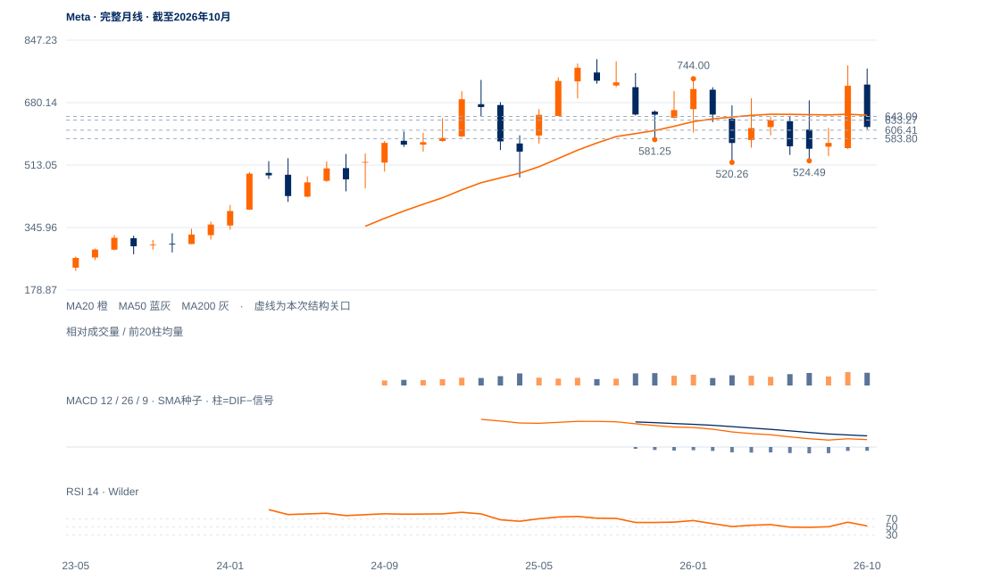

修复失败偏弱
未来1—5日偏向反弹失效后的下沿回测，606—610承接及633.27回收分别检验。
未来1—5日偏向反弹失效后的下沿回测，606—610承接及633.27回收分别检验。
未来2—6周偏向583.80—648.45内弱修复，先核606—610承接。回收633.27并完成643.09原两日条件后，才提高再试648.45以上的判断。
未来1—3个月以长期宽区间消化为主。583.80失守后更接近520—524大下沿风险；连续两周收低520.26则长期整理转为实质破坏。向上周收重夺646.38、抬高周谷后，才重新讨论779—796大高区。

展开图表 ↗2022低88.09至2025年8月796.25完成巨大涨幅；2026年9月779.82及10月771.27没有重夺旧高。今年3月520.26、7月524.49构成低区，长线更接近520—796的宽幅整理。当前623.61接近10月均衡621.37，却在20月646.38下方，不能简单归为持续主升，也尚未跌破长线下沿。
9月靠近旧高后下跌，11月583.80是更近的实际波谷。短线反弹上窗口625.60—630已完全回补，收盘也落在下沿外，633.27原支持未收回；这使当前更像上沿冲关失败后的弱反抽，而不是已完成的筑底。
520—796宽幅整理背景下，短线反弹上窗口已失效。606—610承接及633—648回收，决定当前弱反抽能否恢复。
9日上缺口625.60—630.00，12日低618.92已完全回补，收623.61也低于缺口下沿；与苹果的旧支持尚守不是同一状态。
现价低于原633.27受损线及200日线631.25，20日线640.44也在上方。11日高648.45后弱收628.77，12日继续下收。
12日量比仅0.42，但20日跌15.35%、OBV方向余额约-0.357；需求缺乏也能产生缩量下跌，须观察606.41—610.15附近实际跟进。
先完整日收回633.27；原643.09连续两日条件保留，648.45作为更高供应边界单列。
日收低于606.41增强回测583.80的解释；原633.27受损记录保留，不将新低位替换为旧标准。
短线跌幅与成交量同步收缩，且583.80仍守住；若快速回收633—648，窗口失败可能只是区间中部的换手。
| 周期 | 最后完整柱 | 图示柱数 | RSI14 | ATR14 | MACD柱 |
|---|---|---|---|---|---|
| 日线 | 2026-11-12 | 185 | 42.11047 | 22.97042 | 0.87721 |
| 周线 | 2026-11-06 | 156 | 46.4622 | 56.37997 | -0.52628 |
| 月线 | 2026-10-30 | 96 | 51.52728 | 107.67596 | -14.75837 |
美股价格拆股调整、不含分红再投资。完整周线至11月6日；11月进行中。指数成交量与全成分广度受限。